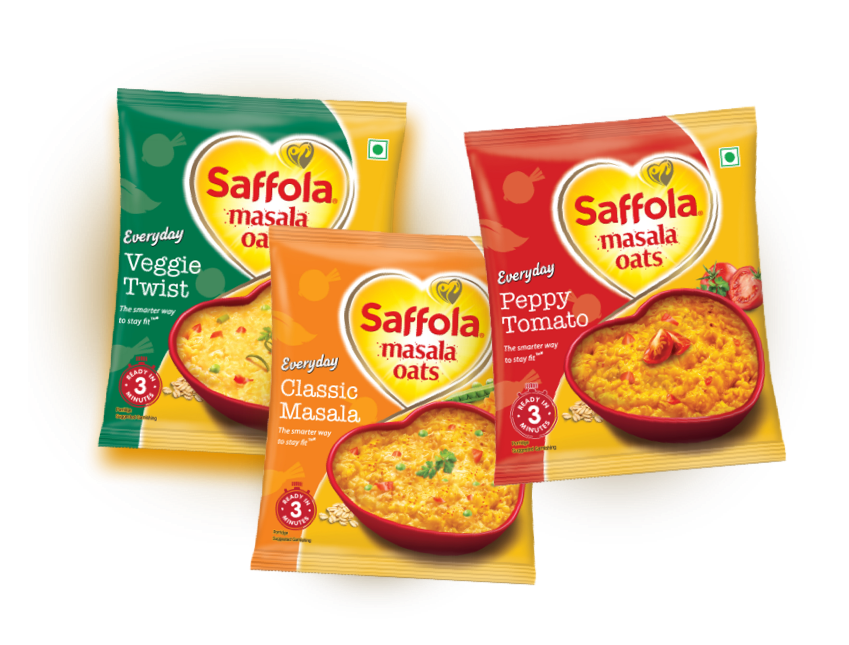

Disclaimer: Vegetables are dehydrated to maintain goodness and taste, Creative visualization, Suggested garnishing
Lip-smacking flavour to
snack healthy
With wholegrain oats + real veggies
Disclaimer: Vegetables are dehydrated to maintain goodness and taste, Creative visualization, Suggested garnishing